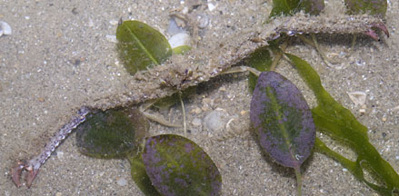
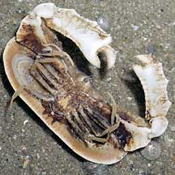

|
|
| crabs text index | photo index |
| Phylum Arthropoda > Subphylum Crustacea > Class Malacostraca > Order Decapoda > Brachyurans |
| Elbow
crabs Family Parthenopidae updated Dec 2019 Where seen? Tiny ones are common but overlooked as they look like bits of dirt or junk among seaweeds. Some species are larger, more grotesque and less often encountered. Features: Most have highly elongated pincers that stick way out from the sides of its body. Others have less obvious 'elbows'. Status and threats: Some of our elbow crabs are listed among the threatened animals of Singapore. Like other creatures of the intertidal zone, they are affected by human activities such as reclamation and pollution. Trampling by careless visitors also have an impact on local populations. |
|
 Pincers many times longer than its body. Changi, May 06 |
 Underside of the Domed elbow crab. Changi, Jul 06 |
|
| Some Elbow crabs on Singapore shores |

| Family
Parthenopidae recorded for Singapore from Wee Y.C. and Peter K. L. Ng. 1994. A First Look at Biodiversity in Singapore in red are those listed among the threatened animals of Singapore from Davison, G.W. H. and P. K. L. Ng and Ho Hua Chew, 2008. The Singapore Red Data Book: Threatened plants and animals of Singapore. +from The Biodiversity of Singapore, Lee Kong Chian Natural History Museum. **from WORMS
|
|
Links
References
|